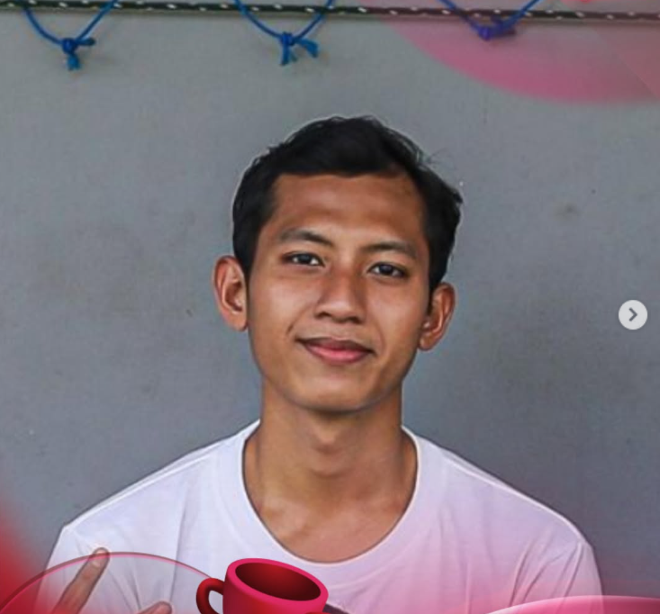

Nama: Muhammad Nadzril Ilham Kusuma
Program Studi: Teknik Informatika
Universitas: Universitas Pancasila
Saya adalah mahasiswa yang sedang mempelajari pengembangan website. Saat ini saya mempelajari HTML dan CSS sebagai dasar untuk membuat halaman web yang terstruktur dan menarik.
Saya tertarik mempelajari pengembangan antarmuka website yang responsif dan mudah digunakan.